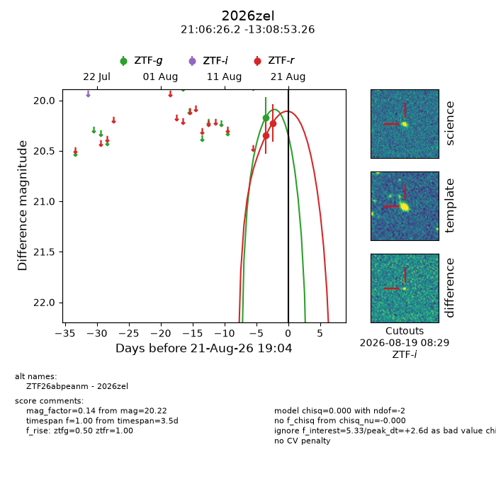
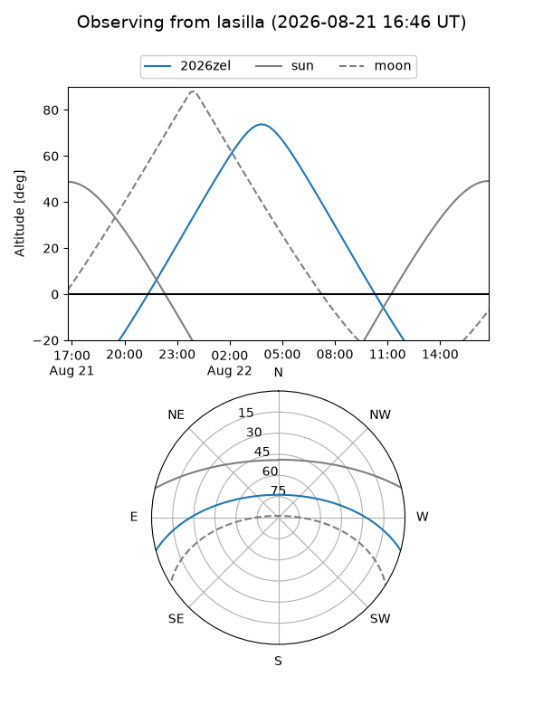
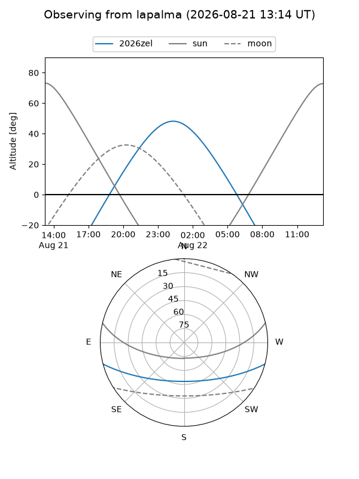
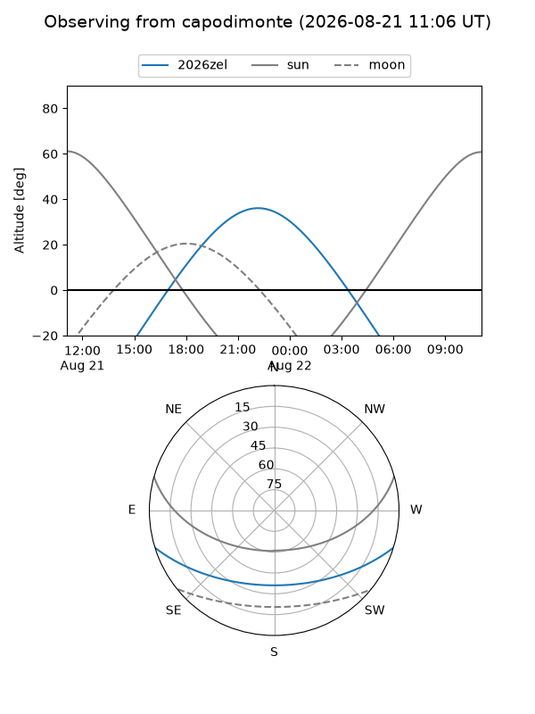
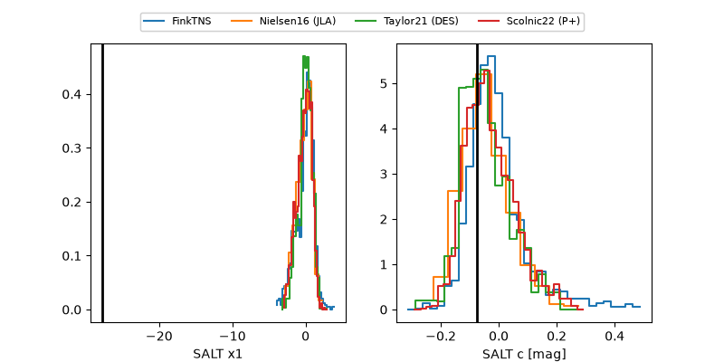

2026zel
Target 2026zel at 2026-08-22 06:53
Aliases and brokers:
FINK-ZTF: ztf.fink-portal.org/ZTF26abpeanm
Lasair-ZTF: lasair-ztf.lsst.ac.uk/objects/ZTF26abpeanm
ALeRCE-ZTF: alerce.online/object/ZTF26abpeanm
YSE-PZ: ziggy.ucolick.org/yse/transient_detail/2026zel
TNS name: wis-tns.org/object/2026zel
Direct TNS query: direct search
alt names
ZTF26abpeanm (ztf,fink_ztf)
2026zel (tns,yse)
Coordinates:
equatorial (ra, dec) = 316.6091,-13.14813
equatorial (HMS+DMS) = 21:06:26.20,-13:08:53.26
galactic (l, b) = (36.0596,-35.81762)
Flags:
TNS type: nan
peak dt: +3.1
Photometry:
last ztfg=20.17, ztfr=20.22
1 ztfg, 2 ztfr detections
Lightcurve

Visibility



Additional plots
